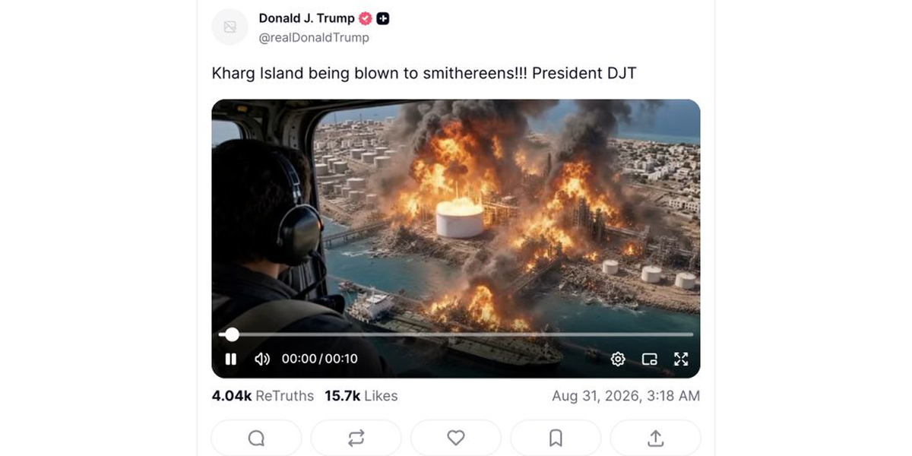

Tankstellen erkennen KI-Angriff an

Berlin – Deutsche Tankstellen haben Donald Trumps KI-Video einer explodierenden iranischen Ölinsel als echten Angriff anerkannt. Noch bevor jemand prüfen konnte, ob Kharg überhaupt getroffen wurde, waren die Preise angepasst.
„Die Welt kann auf Beweise warten. Unsere Preise nicht“, erklärte ein Sprecher der Mineralölwirtschaft. Schließlich könne niemand von den armen Konzernen verlangen, die Bürger weiterhin zu den ohnehin üblichen Wucherpreisen tanken zu lassen, wenn ein KI-Video endlich Raum für einen Aufschlag schaffe.
Nach der neuen Krisenanerkennungsverordnung werden künstlich erzeugte Angriffe echten Angriffen preisrechtlich gleichgestellt. Damit dürfen die Konzerne künftig auch an Krisen verdienen, die nie stattgefunden haben.
Ob Trump die Insel Kharg mit der rund 660 Kilometer entfernten Insel Larak verwechselt hatte, spielt keine Rolle. Die Anerkennung wurde vorsorglich auf den gesamten Persischen Golf ausgeweitet.
„Der Kunde muss nicht wissen, welche Insel brennt“, erklärte der Sprecher. „Er muss nur wissen, dass sein Tank leer ist.“
Deutsche Preistafeln sollen künftig direkt mit Trumps Truth-Social-Konto verbunden werden.
KI-generierte Friedensmeldungen werden grundsätzlich nicht anerkannt. Positive Entwicklungen müssten zunächst von mehreren unabhängigen Stellen bestätigt und mindestens vierzehn Werktage beobachtet werden. Bis dahin gilt der letzte Krisenpreis weiter.
Auch sinkende Rohölpreise reichen für eine Senkung nicht aus. Sie könnten den Markt verunsichern.
Um künftig nicht mehr auf Trump angewiesen zu sein, planen erste Konzerne eigene Krisenvideos. Veröffentlicht werden sie immer dann, wenn der Ölpreis fällt.
Ob die Insel getroffen wurde, ist weiterhin unklar.
Die Autofahrer hat es erwischt.
Reale Grundlage: Donald Trump veröffentlichte ein KI-Video und behauptete, die iranische Ölinsel Kharg werde zerstört. Zuvor griffen die USA Raketenstellungen auf der etwa 660 Kilometer entfernten Insel Larak an. Für einen neuen Angriff auf Kharg lagen zunächst keine Belege vor. Der Brent-Ölpreis stieg am Montag um 3,4 Prozent. Trumps Originalbeitrag · Reuters zum KI-Video · AP zum Ölpreis
← Zurück zur Startseite